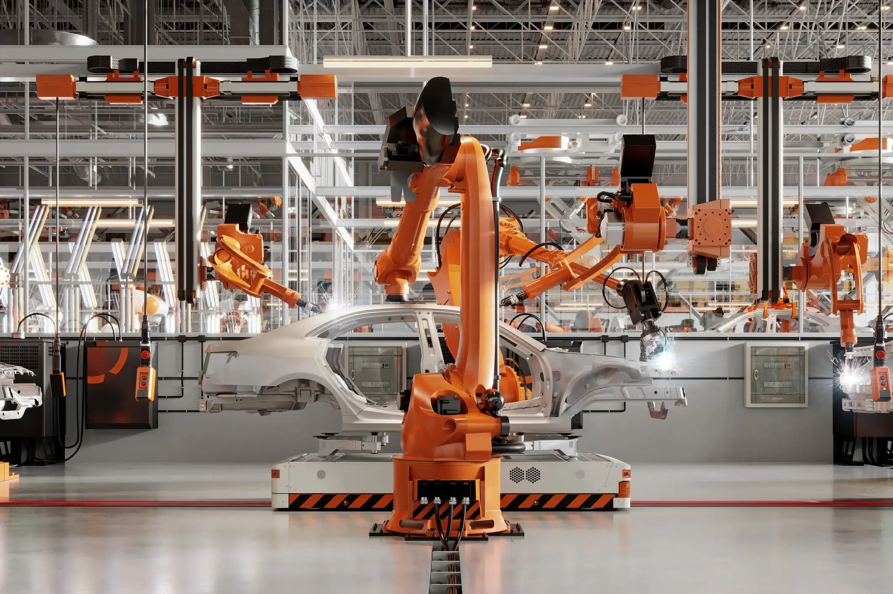
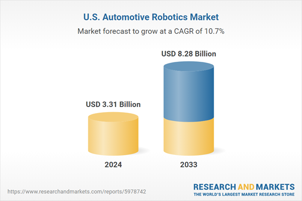

Aux États-Unis, l'industrie automobile parie sur la robotique
De Noam Eniel Publié le 19 mai 2025
Parmi les secteurs les plus profondément transformés par le boom de la robotique et de l’intelligence artificielle, l’automobile occupe une place centrale. Depuis les débuts de l’automobile, l’imaginaire collectif rêve de véhicules capables de se déplacer seuls. Il suffit d’ouvrir un roman de science-fiction pour en retrouver les prémices. Aujourd’hui, la réalité est en train de rattraper – voire de dépasser – la fiction. Aux États-Unis, le marché de la robotique appliquée à l’industrie automobile connaît une croissance fulgurante. Selon les dernières projections, il devrait atteindre 3,31 milliards de dollars en 2024 et bondir jusqu’à 8,28 milliards en 2033. Cette croissance, soutenue par un taux annuel moyen de 10,74 % sur la période 2025-2033, est portée par l’automatisation, l’adoption de robots dotés d’IA, et la recherche d’une production plus précise et efficiente.
Aux Etats-Unis, la robotique automobile est sur le point de connaître une croissance significative. Source: ResearchandMarket
L’automatisation joue un rôle crucial dans l’amélioration des processus de production automobile aux États-Unis. Cette expansion repose sur l’adoption massive de la robotique intelligente, l’automatisation avancée, et des exigences croissantes en matière de précision, en particulier dans la fabrication de véhicules électriques (EV) et autonomes. Les acteurs du secteur robotique ont relevé le défi en développant des machines toujours plus polyvalentes, capables d’exécuter un large éventail de tâches sur les chaînes d’assemblage. Des entreprises comme FANUC America (nouvelle installation dans le Michigan), Rapyuta Robotics (déploiement du système Rapyuta ASRS) ou OMRON Automation Americas (lancement des robots mobiles MD Series) témoignent de la vitalité du secteur aux États-Unis. Les constructeurs américains misent massivement sur ces innovations pour automatiser des tâches essentielles comme la soudure, la peinture, la manutention ou l’assemblage. Ces avancées technologiques poussent l’industrie vers une fabrication toujours plus intelligente, réactive et compétitive à l’échelle mondiale.
Malgré des défis persistants – tels que le coût initial élevé ou la requalification de la main-d’œuvre – les investissements continuent de croître. Face à la montée en puissance des véhicules électriques (EV) et autonomes, les constructeurs investissent dans des solutions robotiques de pointe. En 2024, le Massimo Group a annoncé l’intégration d’une nouvelle ligne de robots d’assemblage automatisée dans son usine du Texas pour optimiser la production de véhicules tout-terrain (ATV) et utilitaires tout-terrain (UTV). Cet exemple illustre une tendance plus large, où les robots collaboratifs (ou « cobots ») gagnent du terrain pour leur flexibilité et leur capacité à travailler aux côtés des opérateurs humains.
Une production toujours plus automatisée mais aussi plus intelligente
Les constructeurs américains misent massivement sur l’intégration de l’IA et du machine learning dans la robotique automobile. Ces technologies permettent d’optimiser l’efficacité, d’améliorer la qualité, et de renforcer la sécurité sur les lignes de production. Aux États-Unis, cette mutation est portée par l’adoption accélérée de technologies de pointe telles que la maintenance prédictive, l’analyse en temps réel des données de production, ou encore la vision par ordinateur appliquée au contrôle qualité. Des plateformes comme NVIDIA CosmosT, lancée en janvier 2025, illustrent cette convergence. Il s’agit d’une solution technologique conçue pour répondre aux besoins croissants en puissance de calcul dans la robotique industrielle avancée et les véhicules autonomes. Dotée d’une IA embarquée ultra-performante, CosmosT peut traiter en temps réel d’immenses volumes de données issues de capteurs, caméras ou systèmes LiDAR, essentiels à l’automatisation.
Ces innovations permettent non seulement de détecter des défauts invisibles à l’œil nu, mais aussi d’ajuster dynamiquement les processus industriels, de réduire les temps d’arrêt, et de personnaliser la production en fonction de la demande. Cette transformation accroît significativement la compétitivité des constructeurs, qui peuvent ainsi anticiper les pannes, réduire les coûts d’exploitation, et répondre plus efficacement aux fluctuations du marché.
Et en Europe ?
En Europe, la robotique appliquée à l’automobile progresse également, mais à un rythme généralement plus modéré que celui observé outre-Atlantique. Des pays comme l’Allemagne, la France ou l’Italie disposent d’une base industrielle robotisée solide et historique. Toutefois, l’adoption généralisée de l’IA et du machine learning dans les usines européennes reste plus hétérogène. Elle est souvent freinée par des régulations strictes, une préoccupation forte autour de l’emploi, et un manque d’harmonisation entre les politiques industrielles des États membres.
L’Union européenne soutient l’innovation robotique via des programmes tels que Horizon Europe ou Digital Europe, mais les investissements privés restent globalement inférieurs à ceux observés aux États-Unis. L’approche européenne privilégie également la cohabitation homme-machine et une utilisation éthique et responsable de l’IA, là où les États-Unis optent pour une course technologique plus agressive, menée par les géants du numérique.
Malgré cette prudence, le marché européen reste stable et résolument tourné vers le long terme. Il mise sur la qualité, la sécurité, l’interopérabilité, et une transition progressive vers une industrie 4.0 durable. Cela dit, l’accélération devient inévitable des deux côtés de l’Atlantique, sous la pression des exigences du marché et de la concurrence mondiale.